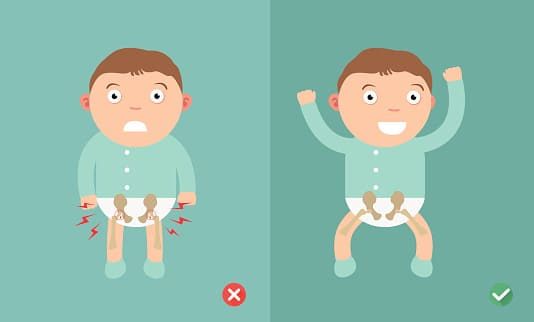
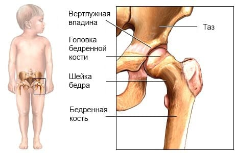
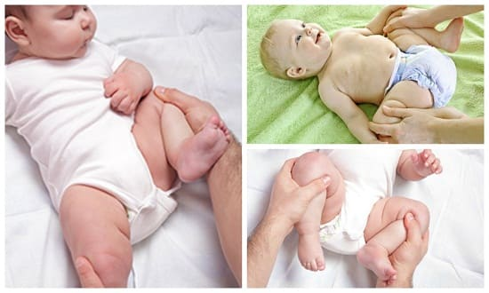
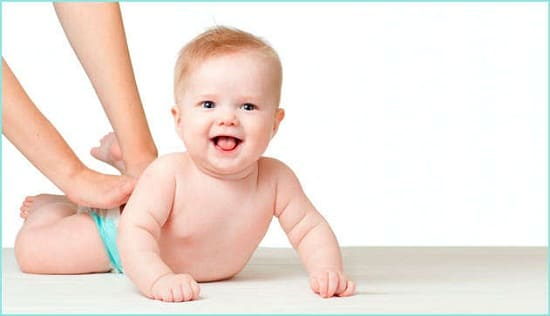

Возможно, вы удивляетесь, почему ваш врач так тщательно проверяет тазобедренный суставы вашего младенца при каждом плановом осмотре и во время первого осмотра новорожденного в больнице. Ваш врач просто хочет убедиться, что бедренная кость правильно соединена с суставной ямкой тазобедренного сустава. Кость должна вставляться в сустав, как шарнир. Иногда головка бедренной кости выскакивает из суставной ямки в первые месяцы после рождения, или суставная ямка тазовой кости недостаточно плотно удерживает «шарнир» при рождении, что приводит к смещению бедра. Врачи уделяют особое внимание детям, которые находились в тазовом предлежании, поскольку положение ребенка с тазовым прилежанием в матке может помешать бедренной кости правильно расположиться в суставной ямке, вызывая вывих бедра при рождении. По мере того как тазобедренный сустав растет и развивается, шарнир и углубление постепенно образуют крепкий сустав. Если на протяжении многих месяцев не замечают, что шарнир не входит в суставную ямку она становится плоской формы вместо нормальной чашеобразной. Чем дольше бедренная кость ноги остается не зафиксированной в суставной ямке, тем короче становятся мышцы вокруг тазобедренного сустава, что еще боль мешает его развитию. В результате вместо кратковременного ношения простой лангеты потребуется серьезная хирургическая коррекция уплощенной суставной ямки, которая дает гарантированного результата.
Смещение бедра у новорожденных называют «развивающаяся дисплазия бедра» (РДБ). Степени смещения могут быть различны. Это объясняете тем, что типичные признаки смещенного бедра могут не проявиться сразу же при рождении, а «развиться» спустя некоторое время в течение первого года жизни ребенка.
РДБ встречается редко, но риск возрастает, если имеется семейная предрасположенность: 12%, если у одного из родителей были смещенные бедра, и вплоть до 36%, если у обоих родителей и предыдущего ребенка была развивающаяся дисплазия бедра. Риск больше у детей с тазовым предлежанием, в этом случае болезнь встречается примерно в 23% случаев. Девочки в большей степени подвержены этой болезни. Теоретически материнский гормон — релаксин может ослабить связки и тазобедренного сустава, приводя к его нестабильности. Смещение в три раза чаще встречается в левом бедре, чем в правом, предположительно, из-за положения, которое младенцы принимают в матке.

ЧТО ВЫ МОЖЕТЕ СДЕЛАТЬ
Вот как вы можете помочь врачу убедиться, что бедра вашего ребенка развиваются правильно:
СОВЕТ ДОКТОРОВ СИРС: БУДЬТЕ ВНИМАТЕЛЬНЫ, ЗАМЕТИВ ДИСКОМФОРТ ПРИ СМЕНЕ ПОДГУЗНИКОВ Не беспокойтесь, если вы слышите щелчок, когда расправляете ноги своего ребенка, чтобы сменить подгузник. Это нормальные суставные шумы, которые случаются в бедренных, плечевых, локтевых и коленных суставах. Эти «доброкачественные щелчки» обычно проходят к первому месяцу жизни. |
ЧТО МОЖЕТ СДЕЛАТЬ ВРАЧ
Вы заметите, что ваш врач проверяет сгибание бедра во время каждого осмотра, по меньшей мере, в течение первого года. Когда ребенок лежит в положении, как при смене подгузника, врач держит верхнюю часть ноги и осторожно сгибает, и оттягивает кость. Если суставная головка бедренной кости выскакивает из суставной ямки, врач почувствует легкий «щелчок». Вы заметите, что врач делает эти тесты очень аккуратно, поскольку выявление бедра, которое действительно может сместиться, не требует сильного сгибания.
Если ваш врач почувствует, что бедра легко смещаются, то есть головка бедренной кости легко выскакивает из суставной ямки, он, скорее всего, направит вас к детскому ортопеду для дальнейшего лечения. Ортопед может порекомендовать ношение мягкой лангеты (по толщине как два-три подгузника), чтобы зафиксировать ноги в тазобедренном суставе. Использовавшийся ранее метод «надевания трех подгузников», чтобы зафиксировать ноги в случае подозрении на развивающуюся дисплазию бедра, больше не рекомендуется. В большинстве случаев ортопеды пропишут стремена Павлика, которые держат бедра ребенка развернутыми большую часть времени, не мешая ему свободно брыкаться. Эти стремена фиксируют кости ноги в развернутом положении (как у лягушки), что способствует нормальному росту тазобедренного сустава. В некоторых более серьезных случаях развивающейся дисплазии бедра детский ортопед может счесть необходимым наложение на несколько недель шины вокруг бедер ребенка и верхней части ног, чтобы прочно закрепить бедренную кость в суставной ямке.
В первые недели жизни определение диагноза «развивающаяся дисплазия бедра» полностью находится в руках врача. До 4-месячного возраста рентгеновские снимки зачастую могут быть недостоверными, поскольку тазобедренный сустав все еще главным образом состоит из хряща. У детей в возрасте от 4 до 6 месяцев они будут более надежными. У детей в возрасте до 6 недель даже ультразвуковое исследование сустава может быть недостоверным, именно поэтому ультразвук не является обычной частью обследования новорожденных. Иногда результаты обследования бедра в течение первых двух недель после рождения могут быть истолкованы неоднозначно, что означает, что бедренная кость, кажется, правильно расположена внутри сустава, но врач чувствует или слышит щелчки, которые надо внимательно перепроверить. На языке врачей «щелчок» — это «повод не для беспокойства, но для внимательного обследования», а «стук» — «необходимость незамедлительного лечения или обследования».

СОВЕТ ДОКТОРОВ СИРС: ПЕЛЕНАЙТЕ РАЗУМНО! За время своей педиатрической практики я (доктор Билл) видел огромное количество случаев развивающейся дисплазии бедра среди канадских индейцев из-за их привычки пеленать каждого новорожденного на много часов подряд. Длительное и тесное пеленание, особенно на ночь, может помешать правильно сформироваться тазобедренному суставу. Хотя пеленание является проверенным временем успокоителем, мы настоятельно не рекомендуем пеленать младенцев более чем на пару часов подряд, особенно тех, у кого есть вышеописанные факторы риска развивающейся дисплазии бедра. После того как мы опубликовали первое издание «Книги о детях», восхваляя использование пеленания для успокоения капризных детей, мой бывший коллега, профессор ортопедии доктор Роберт Солтер, который, основываясь на фактах, написал книгу о развитии бедра у младенцев, попросил меня удалить раздел о пеленании из нашей книги из страха, что родители переусердствуют. Итог: пеленание не причинит вреда, но если оно будет не слишком тесным и не слишком надолго. |
ПОЗДНИЕ ПРИЗНАКИ РДБ
Практически все случаи развивающейся дисплазии бедра, обнаруженные и тщательно пролеченные в ранние месяцы, закончатся нормальным развитием тазобедренного сустава. Иногда у некоторых детей не обнаруживаются стандартные признаки развивающейся дисплазии бедра, даже при самом тщательном осмотре. В результате этого некоторые случаи могут остаться незамеченными, пока не проявятся более поздние симптомы. Вот некоторые признаки, означающие, что вам все же необходимо обратиться к врачу:
• тугоподвижность бедер. Вы за чаете, что становится тяжелее разводить ноги ребенка в стороны смене подгузника и мышцы в паху становятся плотнее на ощупь;
• меняя подгузник, вы замечаете, одна нога заметно более туго подвижна, чем другая. У некоторых детей с нормальными тазобедренными суставами иногда бывает временная тугоподвижность мышц бедра, которая постепенно уменьшается, когда ребенок начинает ползать и ходить. Тугие мышцы бедра не обязательно означают РДБ, но все же об этом стоит рассказать врачу;
• «асимметрия складок» на внутренних поверхностях бедер. Если вы заметите, что на одном бедре — одна складку, на другом — две, обратите на это внимание врача (это просто признак, который может быть и в норме);
• у вашего малыша «походка вразвалочку» или он ходит «на прямых ногах».
Развивающаяся дисплазия бедра, которая поздно проявляется или остается незамеченной до года и старше, часто требует хирургического вмешательства для коррекции.

Здоровье ребенка от докторов Сирс / Сирс У. и др.